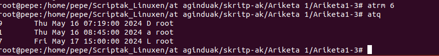
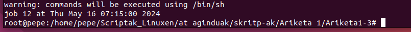

Sortu hiru programa hauek zure erabiltzaile-kontutik:
prog1:
1.1 Bideratu 2002ko abenduko egutegia karpeta partekatutako egut1 fitxategira.
1.2 Zerrendatu era luzean /bin direktorioaren barruko fitxategiak eta direktorioak, karpeta partekatutako zerren1 fitxategian.
prog2:
2.1 Bideratu 2004ko ekaineko egutegia karpeta partekatutako egut2 fitxategira.
2.2 Zerrendatu era luzean erroaren direktorioak eta fitxategiak, karpeta partekatutako zerren2 fitxategian.
prog3:
3.1 Bideratu 2005eko urtarrileko egutegia karpeta partekatutako egut3 fitxategira.
3.2 Zerrendatu era luzean kanpoko fitxategi-sistemak muntatzen diren direktorioaren edukia, karpeta partekatutako zerren3 fitxategian.
3.3 Bihurtu exekutagarri sortu berri dituzun hiru fitxategi horiek.
Prozesu bat ordu eta egun jakin batean exekutatzeko erabiltzen da.
at komandoaren sintaxia honako hau da: at [-q lan-zerrenda] -f skripta ordua
at komandoaren sintaxia honako hau da: at [-q lan-zerrenda] -f skripta ordua
[-q lan-zerrenda] > letra bakarreko lan-zerrenda zehaztu daiteke. Ez da beharrezkoa.
Ordua finkatzeko:
OO:MM formatuan idazten da. AM, PM ez dira beharrezkoak.
Egunik eta ordurik zehaztu ezean, gaurko eguna hartzen da. Egunak zehazteko era bat baino gehiago dago: HHEEUU, HH/EE/UU. Ordu jakinak zehazteko: MIDNIGHT, TODAY, TOMORROW, NOW, NEXT erabil daitezke. Ordu-mugimenduak erabil daitezke, hala nola +MINUTES, HOURS, DAYS, WEEKS, MONTHS, YEARS.
Adibideak: at –f skript1 11:20 at –f skript2 11:20PM at –f skript3 06:00AM 08/21/04 at –f skript4 09:15AM 08.21.04 at –f script5 now + 15 minutes at –q D –f skript6 now + 2 minutes
Lan-zerrendak: at komandoaren bidez planifikatutako lanak lan-zerrendatan gordetzen dira.
at komandoaren bidez planifikatutako lanak zerrendatzeko erabiltzen da.
atq komandoaren sintaxia honako hau da:
atq [-q lan-zerrenda] atq erabiltzailearen lan-zerrenda guztien lanak zerrendatu. atq -q D D lan-zerrendaren lanak zerrendatu.
Lan-zerrendan finkaturiko lanak zerrendatik ezabatzeko erabiltzen da.
atrm 1 lan_zb 1 duen lana zerrendatik kentzen du. atrm 1 3 4 8 lan_zb 1,3,4,8 duten lanak zerrendatik kentzen ditu.
at komandoa erabiltzeko honako baldintza hauek bete behar dira:
rootek beti erabil dezake. /etc/at.allow fitxategia badago, bertan agertzen diren erabiltzaileek erabil dezakete. /etc/at.allow fitxategia badago baina hutsik badago, rootek baino ezin erabil dezake. /etc/at.allow fitxategirik izan ezean, /etc/at.deny fitxategian agertzen ez diren erabiltzaileek erabil dezakete. /etc/at.deny fitxategia badago baina hutsik badago, eta /etc/at.allow ez badago, edozein erabiltzailek erabil dezake. /etc/at.deny eta /etc/at.allow fitxategiak ez badaude, edozein erabiltzailek erabil dezake.
Frogatu at komandoa erabiltzeko baimenik duzun ala ez.
prog1 5 minutu barru exekuta dadin, bidali D lan-zerrendara.
prog2 10 minutu barru exekuta dadin (ordua zehaztu), bidali L lanzerrendara.
Exekutarazi prog3, bihar arratsaldeko 15:00etan.
Zerrendatu D lan-zerrendan dauden lanak
Zerrendatu lan-zerrendetan dauden lanak.
Ezabatu bihar exekutatu beharreko lana.

Denbora igaro ondoren, frogatu exekutatu beharreko lanak exekutatu direla.

urko kontua /etc/at.deny fitxategian sartu ondoren, exekutarazi prog3 urko kontutik, hiru minutu pasatu ondoren.